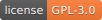

DTOcean¶
Optimal Design Tools for Ocean Energy Arrays
Release v2.0. (Installation)
DTOcean is the only open source fully parametric design tool for arrays of ocean energy converters.
DTOcean automates the design of an array of ocean energy converters (OECs). Automated design helps catch errors early, reduce financial risk and encourage innovation in array design and the supply chain.
Key Features¶
DTOcean is accelerating tomorrow’s energy generation technology with advanced array design:
- Optimal ocean energy converter (OEC) positioning
- Cost-effective energy export
- Station keeping designed for device and site conditions
- Installation planning with weather effects
- Maintenance needs and OEC downtime
- A unique statistical approach to LCOE
- Influence reliability at component level
- Environmental impact assessment*
- Graphical user interface
- Persistent database
- Wizard based installation
* experimental feature